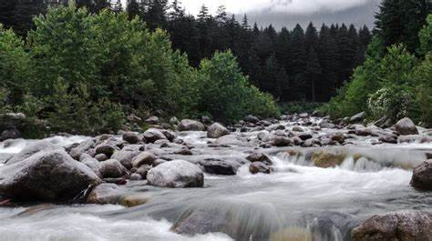

Images

Description
The Van Vihar National Park is one of the most popular tourist attractions in Manali that is widely known for its lush greenery and natural habitat. Situated on the famous Mall Road in front of the Tibetan Market, the Van Vihar National Park, encompassed by sky-touching deodar trees, has become a go-to place for people to enjoy a fun-filled day out with their family and is also an ideal destination for nature admirers to have an intimate communication with life itself.